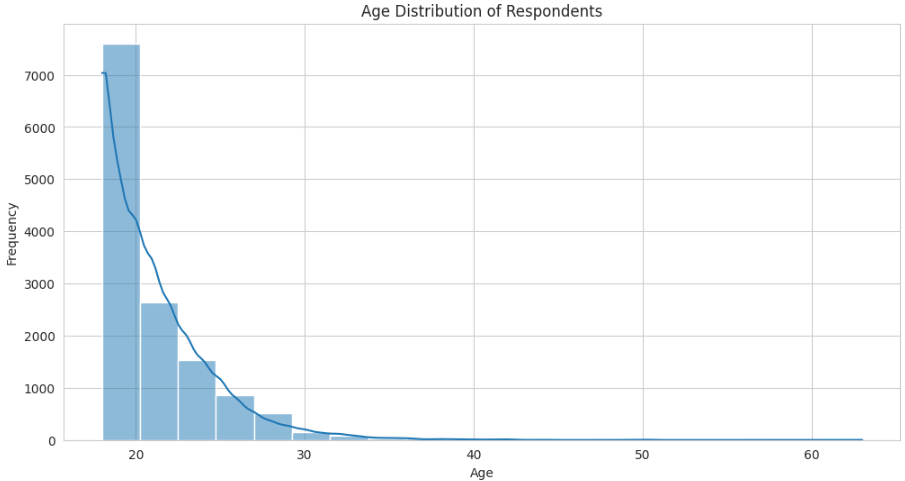
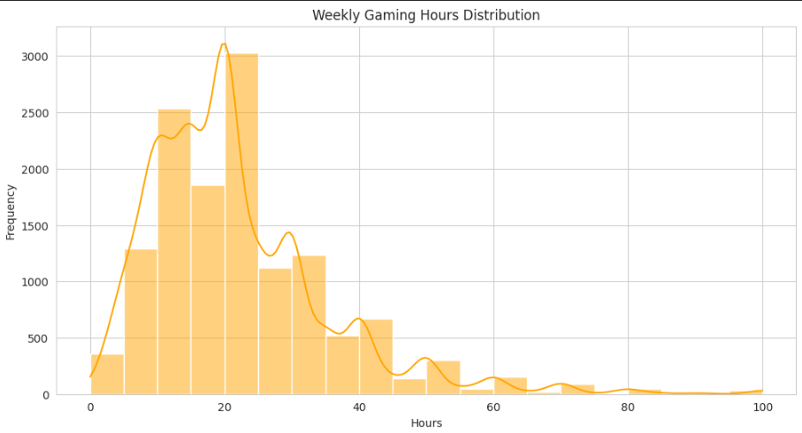
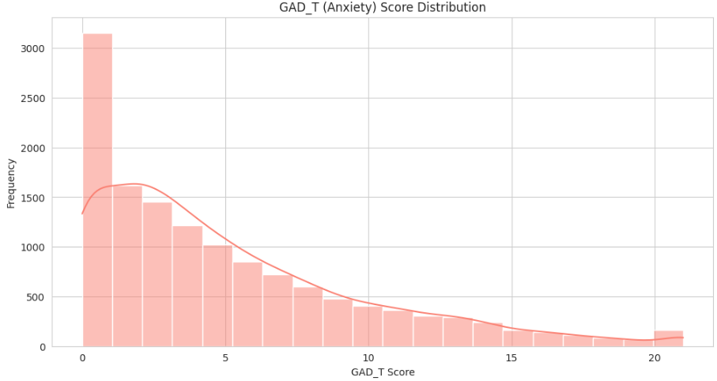
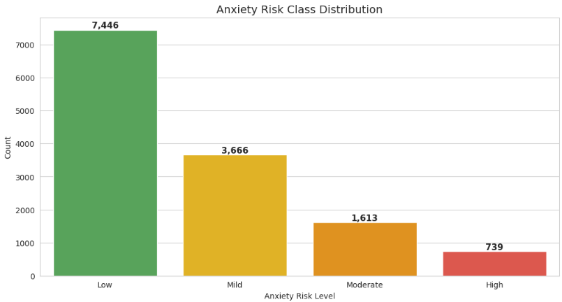
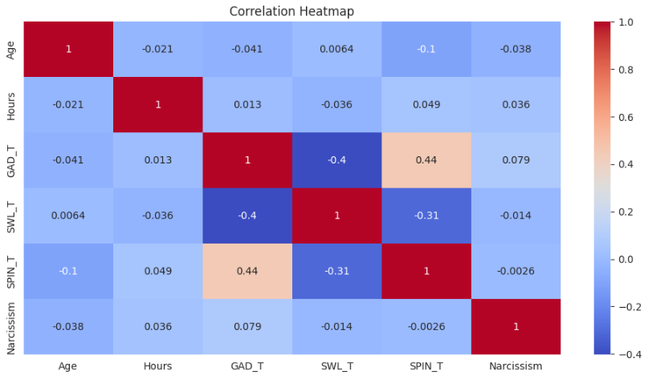
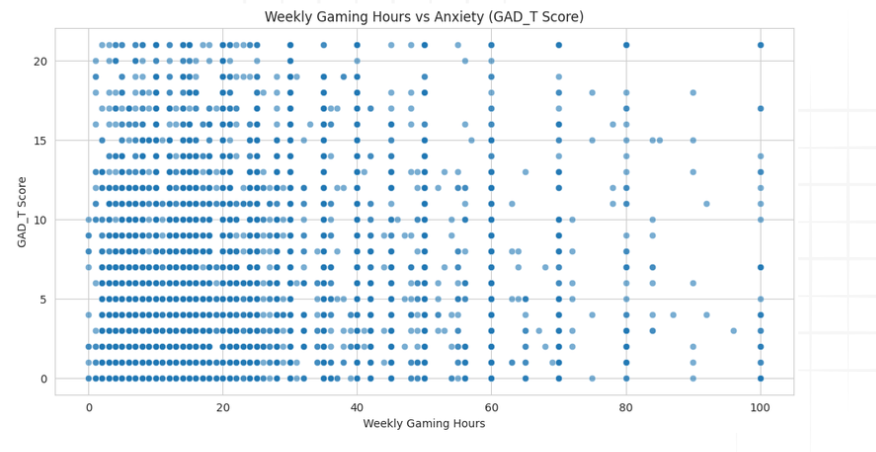
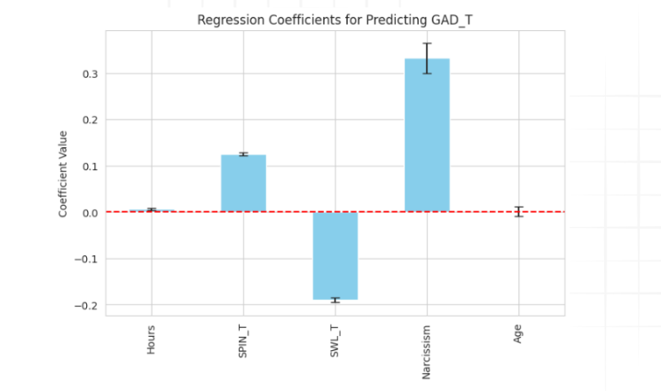
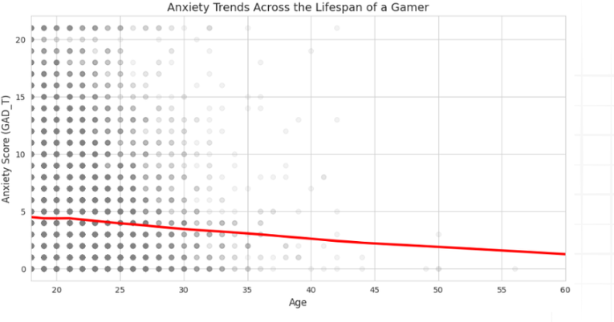
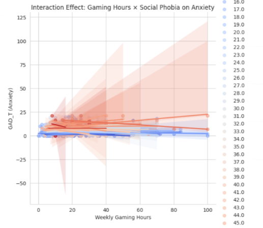

Using gaming hours, social phobia and life satisfaction to understand and predict anxiety (GAD-7).
Delos Angeles, Ranilo John · Rana, Adrian · Villaflor, Kyle
The problem
Heavy gaming doesn’t always mean high anxiety. We look at which life factors matter more.
How anxious are gamers, measured by GAD-7 total scores?
Is anxiety linked to gaming hours, social phobia (SPIN_T) or life satisfaction (SWL_T)?
Which variable is the most significant predictor of anxiety risk?
Dataset
| Column | Meaning |
|---|---|
| GAD1–GAD7, GAD_T | Anxiety items and total score (0–21) |
| GADE | Effect of gaming on daily activities |
| Hours | Weekly gaming hours |
| streams | Time spent watching gaming content |
| Game, Platform | Most played game and platform |
| whyplay, Playstyle | Reason for playing; single-player or online |
| Column | Meaning |
|---|---|
| SPIN_T | Social phobia score (SPIN1–SPIN17) |
| SWL_T | Life satisfaction score (SWL1–SWL5) |
| Narcissism | Narcissism score |
| Age, Gender | Demographic details |
| Work, Degree | Employment and education status |
| Residence, Birthplace | Location information (plus ISO3 codes) |
Data cleaning and preparation
Downloaded with kagglehub for reproducibility.
Pandas, NumPy, Matplotlib, Seaborn, os.
Found the survey CSV in the dataset folder.
UTF-8 failed; loaded with ISO-8859-1.
df.head() confirmed the load and layout.
Shape 13,464 × 55; columns and data types.
0 duplicates found; all 13,464 rows kept.
Max was 8,000 h a week; clipped to 100 h.
Result: 13,464 × 55, ready for analysis. Capping keeps every respondent while stopping impossible hour values from distorting the results.
Exploratory data analysis

Mostly young adults, peak at 18–22.

Most play 10–25 h a week; 40+ h is the exception.

Most score low; a long tail reaches 21.
Problem 1 · Anxiety levels

Solved: most gamers are Low risk, but 44.7% show at least mild anxiety and 5.5% are High risk.
Problem 2 · Related factors

Social phobia +0.44 · life satisfaction −0.40 · hours 0.013

Full range of anxiety at every level of play: no trend.
Solved: social phobia raises anxiety, life satisfaction lowers it, and gaming hours alone show no link.
Problem 3 · Top predictor

| Variable | Coef | p |
|---|---|---|
| SPIN_T | +0.1253 | <0.001 |
| SWL_T | −0.1897 | <0.001 |
| Narcissism | +0.3323 | <0.001 |
| Hours | +0.0064 | 0.012 |
| Age | +0.0006 | 0.954 |
Solved: social phobia and life satisfaction are the strongest predictors; age has none.
R² = 0.280, n = 13,464. Coefficients depend on each variable’s scale, so bar height isn’t an importance ranking.
Deeper look

Peaks at ages 18–23 (near 21), then falls with age.

Low social phobia: flat. High social phobia: more hours, more anxiety.
Hours become a risk only when paired with social phobia, and young adults carry the most risk.
Findings
1 Social phobia (SPIN_T) is the #1 predictor (r = +0.44)
2 Life satisfaction is the strongest protective factor (r = −0.40)
3 Gaming hours alone do NOT predict anxiety (r = 0.013)
4 Age 18–23 is the highest-risk window
1 Screen gamers for social phobia
2 Strengthen life satisfaction and social connection
3 Don’t cap gaming hours for everyone
4 Focus outreach on ages 18–23
Associations from survey data, not causes. Thank you! · Delos Angeles · Rana · Villaflor